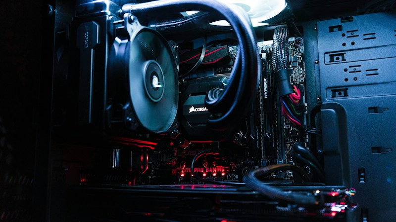

ASM, 플로어블 카본 PECVD 신기술 출시…반도체 미세화 한계 돌파

글로벌 반도체 웨이퍼 공정 장비·소재 기업 ASM이 차세대 스케일링을 위한 혁신 소재 기술인 'XP8 Vertos 플로어블 카본'을 공식 출시했다. 이 제품은 플라즈마 강화 화학기상증착(PECVD) 방식으로 형성되는 플로어블 카본 박막으로, 업계 최초 상용 제품으로 주목받고 있다.
플로어블 카본 기술의 핵심은 액체처럼 흘러들어가는 성질 덕분에 수십 나노미터(nm) 이하의 극미세 트렌치나 홀 구조를 보이드(공극) 없이 완벽하게 채울 수 있다는 점이다. 반도체 공정이 미세화될수록 고종횡비(HAR) 구조가 늘어나는데, 기존 CVD 방식으로는 이런 구조를 결함 없이 채우는 데 한계가 있었다.
기존에는 고종횡비 갭필에 산화물 계열의 플로어블 CVD(FCVD) 소재가 주로 사용됐다. 그러나 탄소 기반 소재는 에칭 마스크로서의 선택비가 훨씬 높아 패터닝 정밀도를 극대화할 수 있다. ASM은 이번 제품이 3나노 이하 로직 및 DRAM, 낸드 플래시 모두에 적용 가능하다고 밝혔다.
ASM은 원자층증착(ALD) 및 에피택시 분야 세계 1위 기업으로, 이번 플로어블 카본 기술은 기존 ALD 리더십을 PECVD 영역으로 확장한 것이다. 회사는 2025년부터 선단 파운드리 고객사를 대상으로 샘플 평가를 진행해왔으며, 2026년 하반기 본격 양산 적용을 목표로 하고 있다.
반도체 공정 기술 전문가는 '플로어블 카본은 HAR 구조 갭필의 게임 체인저가 될 수 있다. 특히 차세대 DRAM의 커패시터 구조와 낸드의 채널홀 공정에서 수율 향상 효과가 클 것'이라고 평가했다. 또한 '탄소 소재 특유의 높은 에칭 선택비가 패터닝 마진을 확보하는 데도 유리하다'고 덧붙였다.
국내 반도체 업계에 미치는 영향도 주목된다. 삼성전자와 SK하이닉스는 모두 2나노 이하 선단 공정과 200단 이상 낸드 개발을 추진 중이어서, 이 기술의 조기 도입 여부가 공정 경쟁력에 직결될 수 있다. ASM이 주요 고객사에 우선 공급하는 순서에 따라 수율 격차가 발생할 가능성도 있다.
ASM의 이번 출시는 반도체 소재 분야에서 ALD와 PECVD의 경계가 허물어지는 '멀티플랫폼 소재' 트렌드를 반영한다. 업계는 단일 공정 장비가 다양한 박막 소재를 원스톱으로 형성할 수 있는 플랫폼 경쟁이 심화될 것으로 전망한다.
글로벌 반도체 소재 시장에서는 탄소 기반 하드마스크·갭필 소재에 대한 수요가 가파르게 증가하고 있다. 시장조사기관 Yole Group에 따르면, 탄소 계열 반도체 특수 소재 시장은 2025~2030년 연평균 18% 성장해 2030년 약 45억 달러(약 6조 원) 규모에 달할 전망이다.
국내에서는 한솔케미칼, 이엔에프테크놀로지, 솔브레인 등 특수 가스 및 전구체 소재 기업들이 탄소 계열 전구체 포트폴리오 확대에 나서고 있다. ASM의 새로운 공정 장비가 상용화되면 이에 맞는 고순도 탄소 전구체 수요가 함께 늘어날 것으로 예상돼 관련 국내 소재 기업들의 수혜가 기대된다.
투자업계에서는 플로어블 카본 기술의 상용화가 반도체 소재 공급망 재편의 계기가 될 수 있다고 본다. 기존 산화물 갭필 소재 시장을 일부 대체할 가능성이 있고, 새로운 탄소 소재 공급망이 형성되는 과정에서 선제 진입 기업이 시장 주도권을 가져갈 것이라는 분석이다.
ASM은 XP8 Vertos 외에도 ALD 기반 고유전율(High-k) 소재, 에피택시 기반 차세대 채널 소재 등 스케일링 한계 극복을 위한 소재 포트폴리오를 지속 확장하고 있다. 반도체 물리적 미세화의 한계가 가시화되는 가운데, 소재 혁신이 공정 기술 발전의 새로운 축으로 자리잡는 추세다.